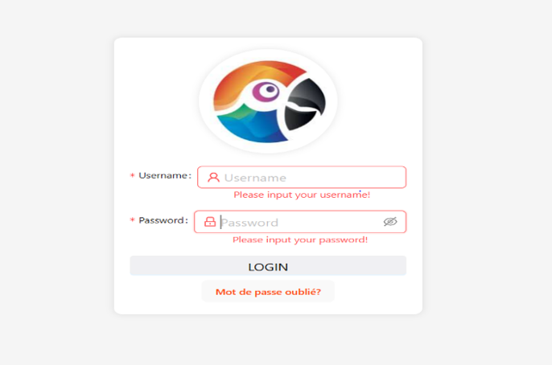
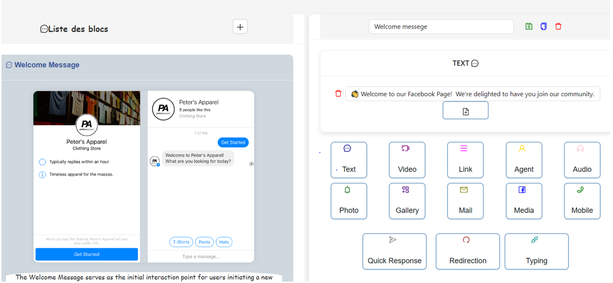
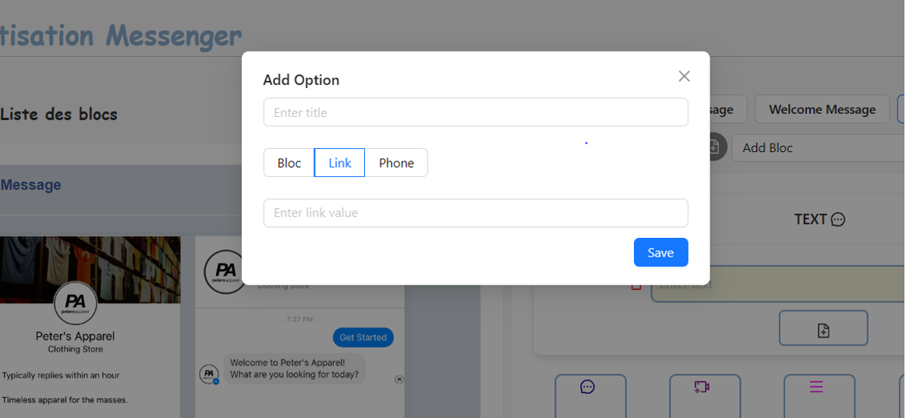
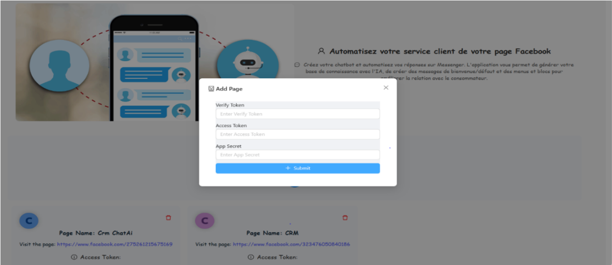
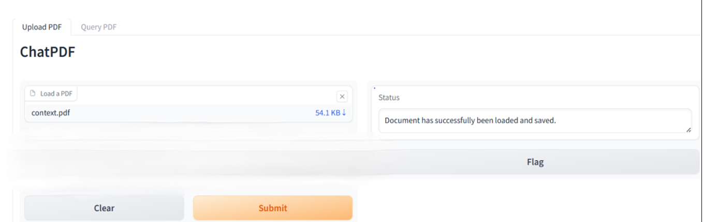
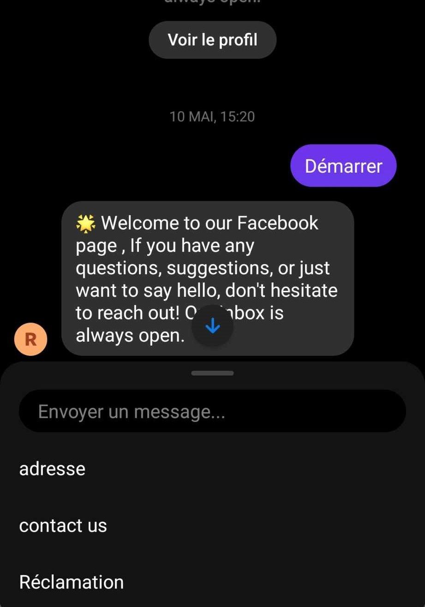

Project Overview
I. Objectif du Projet
Le projet consiste à développer une plateforme de chatbot polyvalente qui s'intègre facilement avec le canal Messenger afin d'automatiser les conversations avec les utilisateurs de la page Facebook.
II. Description du Projet
1. Les besoins fonctionnels
- Gestion des comptes
- Un administrateur peut consulter la liste des utilisateurs.
- Un administrateur peut ajouter, modifier, supprimer un compte utilisateur.
- Notification
- Notre application offre à l'utilisateur la possibilité de recevoir des notifications par e-mail pour réinitialiser le mot de passe en cas d'oubli.
- Gestion des rôles
- Un administrateur peut créer un rôle pour l’associer à un ou plusieurs utilisateurs pour définir leurs permissions.
- Un administrateur peut consulter les rôles ainsi que les modifier ou les supprimer.
- Gestion des départements
- Un administrateur peut créer un département pour l’associer à un ou plusieurs utilisateurs.
- Un administrateur peut consulter les départements ainsi que les modifier ou les supprimer.
- Gestion de la base de connaissances
- Un utilisateur peut ajouter, modifier et supprimer des requêtes dans la base de connaissances.
- Un utilisateur peut choisir la confidentialité de ses requêtes.
- Un administrateur peut consulter l’historique des utilisateurs pour la gestion de la base de connaissance.
- Alimenter la base de connaissances pour automatiser les réponses aux questions fréquentes.
- Gestion de messagerie
- Un utilisateur peut ajouter des blocs, des menus, un message par défaut, un message de bienvenue.
- Un utilisateur peut consulter le scénario de sa page Facebook.
- Intégration transparente avec Messenger
- Un utilisateur peut ajouter une page Facebook.
- Assurer une connectivité fluide et un fonctionnement harmonieux sur Facebook et Messenger.
- Entraînement sur la Base de Connaissances
- Effectuer un entraînement sur les données de la base de connaissances saisies par l'utilisateur.
- Automatisation avec ChatGPT
- Automatiser les conversations sur Messenger en intégrant ChatGPT.
- Entraînement sur un Document
- Proposer un entraînement sur un document fourni par l'utilisateur pour enrichir les capacités du chatbot.
2. Besoins Non Fonctionnels
- Sécurité et Confidentialité
- Tous les accès aux différents espaces doivent être protégés par un mot de passe et un privilège d’accès qui doivent être définis.
- Performance
- La plateforme doit être performante, assurant des temps de réponse rapides sur l'ensemble des canaux.
- Scalabilité
- La solution doit être scalable pour s'adapter à une croissance future de l'utilisation.
- Documentation
- Fourniture d'une documentation technique complète et d'un manuel d'utilisation.
- La maintenabilité
- L’application doit être facile à maintenir ; En effet, la maintenance assure la longévité de l’application.
- L’ergonomie
- Notre application doit présenter une interface simple pour que l’utilisateur ait une manipulation aisée.
3. Modélisation des besoins
- Identification des acteurs
- L’utilisateur : Cet acteur utilise l'application pour automatiser son chatbot Messenger. Il peut facilement naviguer dans l'application.
- L'administrateur : Il est responsable de la gestion des utilisateurs, des rôles, et des départements dans l'application.






Technologies Utilisées
 Laravel
Laravel
 Node.TS
Node.TS
 Pythoon
Pythoon
 React.TS
React.TS
 Mysql
Mysql